Detailed, exam-oriented notes covering every syllabus unit.
Gauss's law: ∮E·dA = Qenc/ε₀. Applied to spherically, cylindrically and planar symmetric charge distributions, it gives E without integrating Coulomb's law directly — e.g. for a uniformly charged sphere of radius R, E = Q/(4πε₀r²) outside and E = Qr/(4πε₀R³) inside.
Conservative nature of E: ∮E·dl = 0 around any closed loop in electrostatics, which lets us define a scalar potential V such that E = −∇V.
Laplace's equation ∇²V = 0 (charge-free region) and Poisson's equation ∇²V = −ρ/ε₀ (in the presence of charge density ρ) are the governing PDEs for electrostatic potential; the Uniqueness theorem guarantees that a solution satisfying the correct boundary conditions is the only solution.
Electric dipole: potential V = p·r̂/(4πε₀r²) at large distances; a dipole in a uniform external field experiences zero net force but a torque τ = p × E, tending to align it with the field.
Capacitance: C = Q/V for an isolated conductor/system; energy stored U = ½CV² = Q²/2C = ½QV.
All of electrostatics rests on Coulomb's law, established experimentally by Charles-Augustin de Coulomb in 1785 using a torsion balance. The law states that the force between two stationary point charges q1 and q2, separated by a distance r, acts along the line joining them, is repulsive for like charges and attractive for unlike charges, and has magnitude directly proportional to the product of the charges and inversely proportional to the square of the distance between them:
F = (1/4πε₀) · (q1 q2 / r²) r̂
Here r̂ is the unit vector directed from the source charge to the charge experiencing the force, and the constant of proportionality 1/4πε₀ ≈ 8.99×10⁹ N·m²/C² is written in this particular form (rationalised units) purely as a matter of convenience for later formulae such as Gauss's law.
When more than two charges are present, the principle of superposition — itself an experimental fact, not a logical necessity — asserts that the net force (or field) at any point due to a collection of charges is simply the vector sum of the forces (or fields) due to each charge acting alone, as if the other charges were not present:
F = Σi Fi , E = Σi Ei
Superposition is what allows the electric field of an arbitrary, even continuous, charge distribution to be built up by integration over infinitesimal charge elements dq, as is done repeatedly throughout this unit (e.g., the ring of charge in Section 1.2) and is what ultimately underlies the validity of Gauss's law for any charge distribution once it is established for a single point charge.
The electric field at a point in space is defined as the electric force experienced per unit positive test charge placed at that point, in the limit that the test charge is vanishingly small so that it does not disturb the source charges:
E = lim(q₀→0) F / q₀
Here F is the force on the test charge q₀. The electric field is a vector quantity, with SI unit newton per coulomb (N/C), equivalent to volt per metre (V/m). For a point charge Q, Coulomb's law gives the field at a distance r as:
E = (1/4πε₀) · (Q/r²) r̂
where ε₀ = 8.854 × 10⁻¹² C²/N·m² is the permittivity of free space and r̂ is the unit vector directed from the source charge to the field point.
Field lines originate on positive charges and terminate on negative charges (or extend to infinity).
The tangent to a field line at any point gives the direction of E at that point.
The density of field lines (number per unit cross-sectional area) is proportional to the magnitude of E.
Field lines never cross, since E has a unique direction at every point.
Field lines are continuous curves that begin and end only on charges, never forming closed loops in electrostatics.
Note: The electric field is a genuine physical field that exists at every point in space, independent of whether a test charge is actually present there. This is the modern field viewpoint, as opposed to Coulomb's original 'action-at-a-distance' picture.
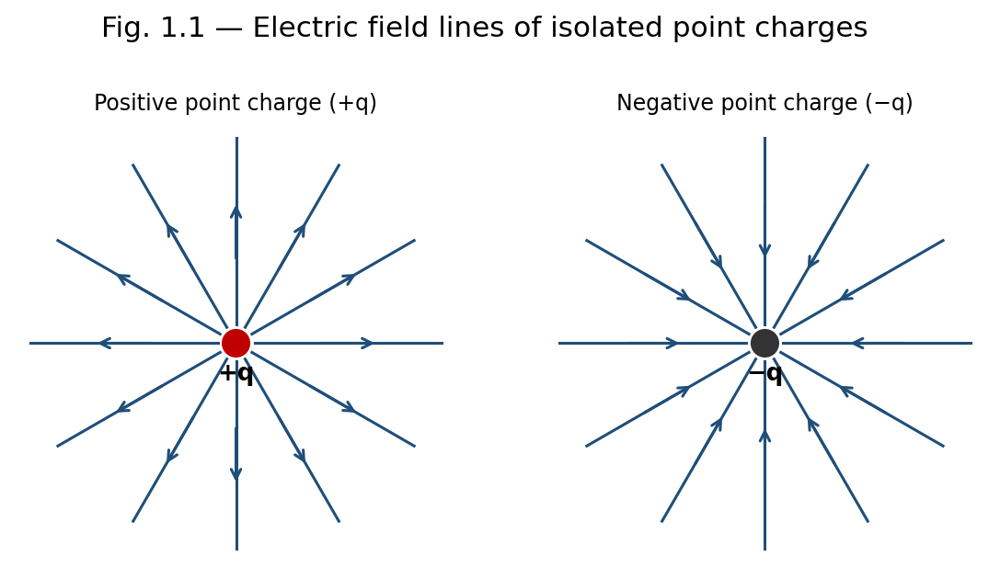
Fig. 1.1 — Field lines diverge from a positive charge and converge into a negative charge.
Field lines are a visualisation aid, not physical entities — no actual 'threads' of field exist in space.
Only a finite, representative number of lines can ever be drawn, so the true field strength (proportional to line density) can only be indicated approximately, not exactly, in any diagram.
The concept becomes difficult to visualise for rapidly time-varying fields or for superpositions of many sources, where lines from different charges must be combined vectorially rather than simply overlaid.
Consider a thin ring of radius a carrying a uniformly distributed total charge Q. We seek the electric field at a point P on the axis of the ring, at a distance x from its centre.
Divide the ring into infinitesimal elements of charge dq = (Q/2πa) dl, where dl is an element of arc length. Each element produces a field of magnitude
dE = (1/4πε₀) · dq / (x² + a²)
directed along the line joining the element to P, making an angle θ with the axis, where cosθ = x/√(x²+a²). By symmetry, the components of dE perpendicular to the axis cancel in pairs for diametrically opposite elements, and only the axial components survive. The axial component is dE cosθ, so:
Ex = ∮ dE cosθ = (1/4πε₀) · x/(x²+a²)^(3/2) ∮ dq
Since ∮dq = Q, the resultant field on the axis is:
E(x) = (1/4πε₀) · Qx / (x² + a²)^(3/2)
directed along the axis, away from the ring if Q is positive.
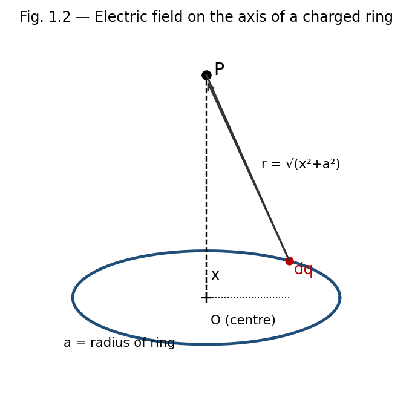
Fig. 1.2 — Geometry for the field of a uniformly charged ring on its axis.
At the centre of the ring (x = 0): E = 0, as expected from symmetry.
Far from the ring (x ≫ a): E ≈ (1/4πε₀)(Q/x²), so the ring behaves like a point charge Q at large distances.
The field is maximum at x = a/√2, obtained by setting dE/dx = 0.
Electric flux ΦE through a surface is a measure of the number of field lines passing through that surface. For a small surface element of area dA with outward unit normal n̂, in a field E, the elemental flux is:
dΦE = E · dA = E · n̂ dA = E dA cosθ
where θ is the angle between E and the outward normal n̂. The total flux through a surface S is obtained by integrating:
ΦE = ∫∫S E · dA
For a closed surface, the outward normal is taken as positive, and the net flux is positive when more field lines leave the surface than enter it (net positive charge enclosed), and negative otherwise. The SI unit of electric flux is N·m²/C, or equivalently, V·m.
Gauss's law relates the net electric flux through any closed surface (a Gaussian surface) to the total charge enclosed by that surface. It is one of Maxwell's four equations and follows directly from Coulomb's law together with the inverse-square nature of the field.
ΦE = ∮S E · dA = Qenc / ε₀
The net outward electric flux through any closed surface equals the total charge enclosed divided by ε₀, regardless of the shape of the surface or the position of the charges within it.
Consider a point charge Q at the centre of a sphere of radius r. The field on the surface has constant magnitude E = Q/4πε₀r² and is everywhere radial, hence parallel to dA. Thus:
ΦE = ∮ E dA = E ∮ dA = (Q/4πε₀r²)(4πr²) = Q/ε₀
This result is independent of r, showing that the flux depends only on the enclosed charge. Since field lines that leave a spherical Gaussian surface must also cross any other closed surface enclosing the same charge (as lines can only terminate on charges), the result ΦE = Q/ε₀ holds for a Gaussian surface of any shape. For several charges, superposition gives ΦE = ΣQenc/ε₀; for continuous charge distributions, Qenc = ∫ρ dV.
Gauss's law is always true, but it is only useful for directly calculating E when the charge distribution has enough symmetry (spherical, cylindrical, or planar) to allow a Gaussian surface on which E is constant in magnitude and either parallel or perpendicular to dA at every point.
For irregular or asymmetric charge distributions, Gauss's law remains valid but does not by itself yield E; one must instead resort to direct integration of Coulomb's law, numerical methods, or other techniques (e.g. the method of images for conductors).
Gauss's law relates only to the enclosed charge; it says nothing about the contribution of charges outside the Gaussian surface to the field at individual points on that surface (even though the net flux from external charges is always zero).
Rapid determination of E for highly symmetric charge distributions (spheres, cylinders, planes) without lengthy integration — illustrated in Section 1.6.
Proving that the field inside a hollow conductor in electrostatic equilibrium, with no charge in the cavity, is zero — the basis of electrostatic shielding used in Faraday cages.
Showing that excess charge on a conductor resides entirely on its outer surface.
Deriving the boundary condition on E at a charged conductor's surface, E = σ/ε₀ (just outside), used extensively in the theory of capacitors.
The integral form can be converted to a differential (point) form using the divergence theorem (Gauss–Ostrogradsky theorem), which states that for any vector field E:
∮S E · dA = ∫∫∫V (∇ · E) dV
Writing the enclosed charge as Qenc = ∫V ρ dV in terms of the volume charge density ρ, Gauss's law becomes:
∫V (∇ · E) dV = (1/ε₀) ∫V ρ dV
Since this equality holds for every arbitrary volume V, the integrands themselves must be equal at every point:
∇ · E = ρ / ε₀
This is the differential form of Gauss's law, one of the four Maxwell's equations. It states that the divergence of the electric field at a point is a local measure of the charge density there — field lines diverge outward from positive charge and converge into negative charge.
Gauss's law is most powerful when the charge distribution possesses sufficient symmetry (spherical, cylindrical, or planar) so that a Gaussian surface can be chosen on which E is either constant in magnitude and parallel to dA, or perpendicular to dA (contributing zero flux). The six classical applications below illustrate this method.
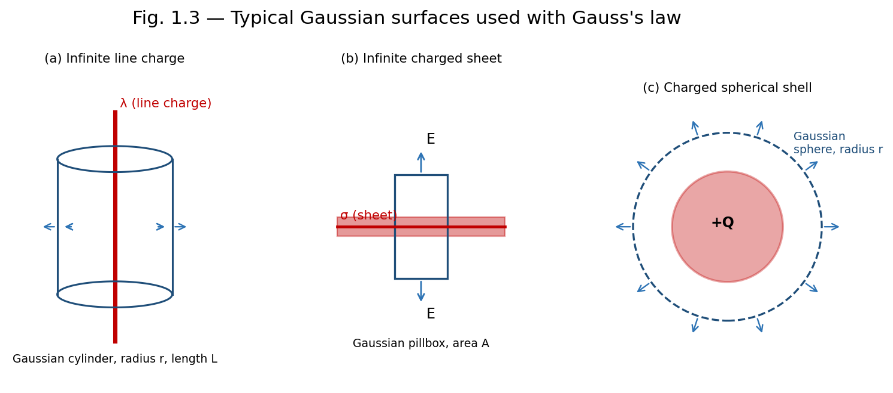
Fig. 1.3 — Gaussian surfaces chosen to match the symmetry of (a) a line charge, (b) a sheet of charge, and (c) a spherical shell.
Let λ be the uniform linear charge density of an infinitely long straight line. By symmetry, E is radial (perpendicular to the line) and depends only on the perpendicular distance r from the line. Choose a coaxial cylindrical Gaussian surface of radius r and length L. The flux through the flat end caps is zero since E is parallel to them; only the curved surface contributes:
ΦE = E (2πrL) = Qenc/ε₀ = λL/ε₀
E = λ / (2πε₀ r)
The field falls off as 1/r, in contrast to the 1/r² fall-off of a point charge, reflecting the different (cylindrical) symmetry.
For a long solid conducting cylinder of radius R carrying charge per unit length λ, all the excess charge resides on the outer surface (since the field inside a conductor in electrostatic equilibrium is zero). Using a cylindrical Gaussian surface of radius r and length L:
Inside the conductor (r < R): Eenc = 0, so E = 0.
Outside the conductor (r > R): the entire charge λL is enclosed, giving E(2πrL) = λL/ε₀, so E = λ/(2πε₀r), identical in form to the infinite line charge.
If instead the cylinder is a uniformly charged non-conducting solid cylinder with volume charge density ρ, then for r < R the enclosed charge is Qenc = ρ(πr²L), giving E = ρr/(2ε₀), which increases linearly with r inside and matches the λ/(2πε₀r) form outside at r = R.
For an infinite plane sheet with uniform surface charge density σ, symmetry demands that E is perpendicular to the sheet and has the same magnitude at equal distances on either side. Choose a Gaussian 'pillbox' — a small cylinder straddling the sheet with each flat face of area A parallel to the sheet. Flux crosses only the two flat faces:
ΦE = EA + EA = 2EA = Qenc/ε₀ = σA/ε₀
E = σ / (2ε₀)
directed away from the sheet on both sides if σ is positive, and independent of the distance from the sheet.
For two infinite parallel sheets carrying equal and opposite surface charge densities +σ and −σ, separated by some distance, superposition of the two individual fields (each of magnitude σ/2ε₀) gives:
In the region between the sheets: the two fields add, giving E = σ/ε₀, directed from the positive sheet toward the negative sheet.
In the regions outside the sheets: the two fields are equal and opposite, so E = 0.
Note: This configuration, with a uniform field confined between two oppositely charged plates and zero field outside, is the idealised model of a parallel-plate capacitor.
Consider a thin spherical shell of radius R carrying a total charge Q uniformly distributed over its surface. By spherical symmetry, E is radial and depends only on r, the distance from the centre. Choose a concentric spherical Gaussian surface of radius r.
Outside the shell (r > R): Qenc = Q, so E(4πr²) = Q/ε₀, giving E = Q/(4πε₀r²) — identical to the field of a point charge Q located at the centre.
Inside the shell (r < R): Qenc = 0 (no charge is enclosed), so E = 0 everywhere inside.
This shows the important result, first proved by Newton for gravitation and equally valid for electrostatics, that a uniform spherical shell of charge exerts no field on any point inside it, and behaves like a point charge at its centre for points outside.
A hollow (spherical shell of finite thickness) sphere with inner radius R₁ and outer radius R₂, carrying a total charge Q uniformly distributed through the shell's volume (charge density ρ = Q / [(4/3)π(R₂³ − R₁³)]), gives three field regions by Gauss's law:
r < R₁ (cavity region): Qenc = 0, so E = 0.
R₁ < r < R₂ (within the material of the shell): Qenc = ρ·(4/3)π(r³ − R₁³), giving E = ρ(r³ − R₁³) / (3ε₀ r²).
r > R₂ (outside the shell): Qenc = Q, giving E = Q/(4πε₀r²), as for a point charge at the centre.
For a solid non-conducting sphere of radius R carrying total charge Q uniformly distributed through its volume (ρ = Q / [(4/3)πR³]), applying Gauss's law with a concentric spherical surface of radius r gives:
Outside the sphere (r ≥ R): Qenc = Q, so E = Q/(4πε₀r²), exactly as for a point charge.
Inside the sphere (r ≤ R): only the charge within radius r contributes, Qenc = Q(r³/R³), giving E(4πr²) = Q r³ / (ε₀ R³), so E = Qr / (4πε₀R³).
Thus E grows linearly with r inside the sphere (E ∝ r), reaches its maximum value E = Q/(4πε₀R²) at the surface, and then falls off as 1/r² outside. This piecewise behaviour — linear growth inside, 1/r² decay outside, continuous at the boundary — is characteristic of any uniformly charged solid sphere and is frequently tested in examinations.
Example: Field inside and outside a uniformly charged solid sphere
A solid sphere of radius R = 10 cm carries a total charge Q = 2 μC uniformly distributed in its volume. Find E at r = 5 cm and at r = 20 cm.
At r = 5 cm (inside, r < R): E = Qr/(4πε₀R³) = (9×10⁹ × 2×10⁻⁶ × 0.05)/(0.1)³ = 9×10⁵ N/C.
At r = 20 cm (outside, r > R): E = Q/(4πε₀r²) = (9×10⁹ × 2×10⁻⁶)/(0.2)² = 4.5×10⁵ N/C.
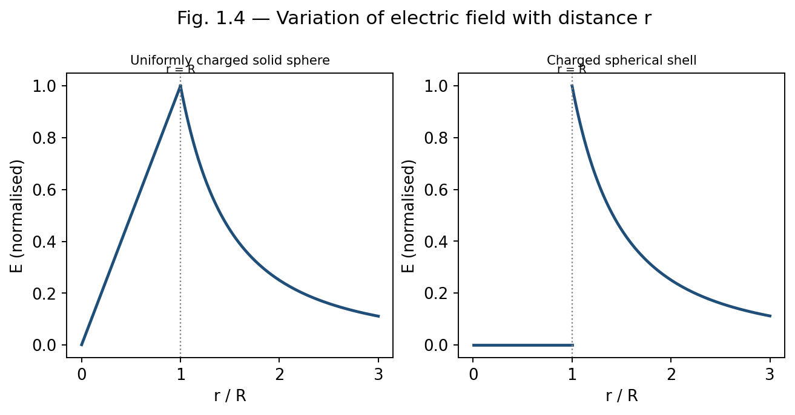
Fig. 1.4 — Field magnitude versus distance r for a uniformly charged solid sphere (left, E∝r inside) and a spherical shell (right, E=0 inside).
Electrostatic (potential) energy is the work required to assemble a system of charges, or equivalently, the energy stored in the electric field created by the charges. Two complementary viewpoints are used.
The work done in assembling n point charges, bringing them one at a time from infinity, is:
W = (1/4πε₀) Σi<j (qi qj / rij)
For two charges q1 and q2 separated by r, this reduces to W = q1q2/4πε₀r.
Alternatively, the energy can be regarded as stored throughout space wherever an electric field exists, with an energy density (energy per unit volume):
u = (1/2) ε₀ E²
The total electrostatic energy of a configuration is then found by integrating this energy density over all space:
U = (ε₀/2) ∫ E² dV
This field-based expression is completely general and applies equally to continuous charge distributions; for a uniformly charged sphere, for instance, it correctly reproduces the self-energy U = 3Q²/(20πε₀R). The field viewpoint is conceptually important because it locates the energy in the field itself, rather than in the charges, a perspective consistent with the full theory of electromagnetism where energy can be radiated away from its source as light.
Example: Field of an infinite line charge
An infinite line carries a uniform linear charge density λ = 2 μC/m. Find the electric field at a perpendicular distance of 10 cm.
E = λ/(2πε0r) = (2×10⁻⁶)/(2π × 8.854×10⁻¹² × 0.1) = 3.6×10⁵ N/C, directed radially outward from the line.
Example: Field due to an infinite charged sheet
A large plane sheet carries a uniform surface charge density σ = 5 μC/m². Find E close to the sheet, and the potential difference between two points 2 cm apart on either side of it (ignore fringing).
E = σ/2ε0 = (5×10⁻⁶)/(2×8.854×10⁻¹²) = 2.82×10⁵ N/C on each side, directed away from the sheet.
Since E is uniform close to the sheet, ΔV = E×d = 2.82×10⁵ × 0.02 = 5.64×10³ V between the two points, with the positively charged side at higher potential.
Example: Field inside and outside a charged spherical shell
A thin spherical shell of radius 15 cm carries a total charge of 3 μC spread uniformly over its surface. Find E at r = 10 cm and at r = 30 cm.
At r = 10 cm (inside the shell, r < R): Qenc = 0, so E = 0.
At r = 30 cm (outside the shell, r > R): E = Q/4πε0r² = (9×10⁹ × 3×10⁻⁶)/(0.3)² = 3×10⁵ N/C, directed radially outward.
Define electric field and electric field lines. State any three properties of field lines.
Distinguish clearly between electric field and electric force, giving their respective SI units.
Define electric flux and write its SI unit. Is flux a scalar or a vector quantity?
State Gauss's law in both integral and differential form, and explain the meaning of each symbol.
Why is Gauss's law particularly useful for charge distributions with high symmetry?
Explain why the electric field inside a uniformly charged spherical shell is zero.
Derive the relation between the divergence theorem and the differential form of Gauss's law.
Define electrostatic energy density and write its expression in terms of E.
Derive an expression for the electric field on the axis of a uniformly charged ring, and discuss its behaviour at the centre and at large distances.
State and prove Gauss's law, starting from Coulomb's law for a point charge.
Using Gauss's law, derive the electric field due to an infinite line of charge and an infinite plane sheet of charge.
Derive an expression for the electric field, both inside and outside, of a uniformly charged solid non-conducting sphere. Sketch the variation of E with r.
Obtain an expression for the field due to a uniformly charged hollow sphere in the three regions r<R1, R1<r<R2, r>R2.
Derive the expression for electrostatic energy stored in a system of point charges and show its equivalence with the field energy density (1/2)ε0E².
A ring of radius 8 cm carries a uniformly distributed charge of 4 μC. Find the electric field on the axis at a distance of 6 cm from the centre. [Ans: ≈ 4.3 × 10⁶ N/C]
Find the electric field at a distance of 20 cm from an infinite line charge of linear density 5 μC/m. [Ans: ≈ 4.5 × 10⁵ N/C]
Two infinite parallel sheets carry surface charge densities +6 μC/m² and −6 μC/m². Find the field between them and outside them. [Ans: 6.78×10⁵ N/C between; 0 outside]
A solid sphere of radius 12 cm carries a total charge of 5 μC uniformly distributed through its volume. Find E at r = 6 cm and r = 24 cm.
Calculate the electrostatic self-energy of a uniformly charged solid sphere of radius R and charge Q, using U = (ε0/2)∫E²dV over all space. [Ans: U = 3Q²/20πε0R]
1. The SI unit of electric flux is: (a) N/C (b) N·m²/C (c) C/m² (d) V/m — Answer: (b)
2. The electric field inside a uniformly charged solid sphere varies as: (a) 1/r² (b) 1/r (c) r (d) constant — Answer: (c)
3. Gauss's law in differential form is written as: (a) ∇×E = ρ/ε0 (b) ∇·E = ρ/ε0 (c) ∇²E = ρ/ε0 (d) ∇·E = 0 — Answer: (b)
4. The field due to an infinite charged sheet is independent of: (a) σ (b) ε0 (c) distance from the sheet (d) none of these — Answer: (c)
5. Inside a uniformly charged spherical shell, the electric field is: (a) maximum (b) zero (c) equal to that at the surface (d) infinite — Answer: (b)
An electric dipole consists of two equal and opposite charges +q and −q separated by a small distance d; its strength is characterised by the electric dipole moment p = qd, a vector directed from the negative to the positive charge. The dipole is a useful idealisation for neutral molecules with a separated centre of positive and negative charge (e.g., water).
The electric field on the axial line, at distance r from the centre of the dipole (r ≫ d), is obtained by superposing the fields of the two charges:
Eaxial = (1/4πε₀) · 2p / r³
while on the equatorial line (perpendicular bisector), the field is:
Eequatorial = − (1/4πε₀) · p / r³
directed opposite to p. In both cases the field falls off as 1/r³, faster than the 1/r² fall-off of a single point charge, because the fields of the two closely spaced opposite charges nearly cancel at large distances. When placed in an external uniform field E, a dipole experiences zero net force but a torque τ = p × E that tends to align p with E, and possesses potential energy U = −p·E, which is minimum (most stable) when p is parallel to E.
| Configuration | Field Expression | Region |
| Point charge | E = Q/4πε₀r² | all r |
| Infinite line charge | E = λ/2πε₀r | all r > 0 |
| Infinite charged sheet | E = σ/2ε₀ | independent of distance |
| Two parallel sheets (±σ) | E = σ/ε₀ (between), 0 (outside) | — |
| Spherical shell | 0 (inside); Q/4πε₀r² (outside) | r<R ; r>R |
| Solid charged sphere | Qr/4πε₀R³ (inside); Q/4πε₀r² (outside) | r<R ; r>R |
UNIT 2
Electric Potential
Polarization P is the dipole moment per unit volume induced in a dielectric by an external field. Electric displacement D = ε₀E + P, chosen so that ∮D·dA = Qfree,enc — Gauss's law in terms of D depends only on free charge, not bound (polarization) charge.
Linear dielectrics: P = ε₀χeE, so D = ε₀(1+χe)E = εE, where ε = ε₀εr is the permittivity and εr the relative permittivity (dielectric constant).
Boundary conditions: the component of D perpendicular to an interface is continuous if there is no free surface charge; the component of E parallel to the interface is always continuous.
Capacitor with dielectric: inserting a dielectric of constant εr increases capacitance by the factor εr (fully filled) — enabling higher charge storage at the same voltage, central to practical capacitor design.
The line integral of the electric field between two points A and B along a path is defined as:
∫A→B E · dl
This quantity represents (the negative of) the work done per unit charge by the electric field in moving a test charge from A to B. Because E is a conservative field (see Section 2.3), this integral is path-independent — it depends only on the positions of A and B, not on the route taken between them.
The electric potential difference between two points A and B is defined as the work done per unit positive charge by an external agent in moving the charge from A to B against the electric force, at constant (negligible) kinetic energy:
VB − VA = − ∫A→B E · dl
The absolute electric potential V at a point P is obtained by choosing a reference point (conventionally at infinity, where V is taken as zero for localised charge distributions) and defining:
V(P) = − ∫∞→P E · dl = ∫P→∞ E · dl
For a point charge Q, integrating E = Q/4πε₀r² radially from r to infinity gives the familiar result:
V(r) = Q / (4πε₀ r)
Electric potential is a scalar quantity with SI unit volt (V), where 1 V = 1 J/C. Because potential is a scalar, the net potential due to several charges is obtained by simple algebraic (not vector) superposition:
V = (1/4πε₀) Σi (qi / ri)
A vector field is said to be conservative if the line integral of the field between any two points is independent of the path taken, equivalently, if the line integral around any closed path is zero:
∮ E · dl = 0
For the electrostatic field of a point charge, this can be verified directly: since E is radial and depends only on r, the work done in moving along any path can be decomposed into radial and tangential segments; only the radial segments contribute, and their contributions depend solely on the initial and final radii, not on the specific path. By superposition, the same conclusion holds for any static charge distribution.
Applying Stokes' theorem, ∮E·dl = ∫∫(∇×E)·dA, and since this vanishes for every possible surface bounded by the closed loop, we obtain the differential statement of conservativeness:
∇ × E = 0
Note: The conservative nature of the electrostatic field is what permits the definition of a scalar potential V in the first place; any field with non-zero curl (such as the induced electric field during electromagnetic induction, Unit 5) cannot be derived from a single-valued scalar potential.
The conservative property, and hence the very concept of a well-defined scalar potential, holds only for static (time-independent) charge distributions; once fields vary with time, ∇×E = −∂B/∂t (Unit 5) and E is no longer conservative in the same sense.
Potential is defined only up to an arbitrary additive constant, fixed by the choice of reference point (usually infinity); differences in potential, not its absolute value, are what carry physical meaning.
Since ∇ × E = 0 for the electrostatic field, and the curl of the gradient of any scalar function is identically zero, E can always be expressed as the (negative) gradient of a scalar potential:
E = − ∇V
In Cartesian coordinates:
E = −(∂V/∂x) x̂ − (∂V/∂y) ŷ − (∂V/∂z) ẑ
This relation shows that the electric field points in the direction of the most rapid decrease of potential, and that its magnitude equals the maximum rate of change of V with distance. Equivalently, from the definition in Section 2.2:
dV = − E · dl
Surfaces on which V is constant are called equipotential surfaces; the electric field is everywhere perpendicular to equipotential surfaces, and no work is done in moving a charge along an equipotential surface.
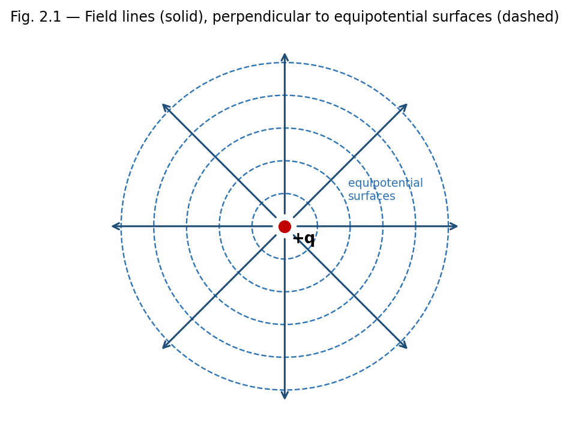
Fig. 2.1 — Radial field lines of a point charge are everywhere perpendicular to its spherical equipotential surfaces.
Mapping the potential of a charge configuration (often easier, since V is a scalar) and then differentiating to obtain E, rather than summing vector fields directly — particularly useful for complex or asymmetric charge distributions.
Locating equipotential surfaces experimentally (e.g. in a electrolytic tank or with a voltmeter) is often easier than measuring field direction directly, and E can then be inferred from the spacing of the surfaces.
Design of electron optics and particle accelerators, where equipotential mapping determines particle trajectories.
Example: Uniform field between parallel plates
Two large parallel plates separated by distance d = 2 cm are maintained at a potential difference of 100 V. Find the electric field between them, assuming it is uniform.
Using E = −dV/dx with V changing uniformly, E = ΔV/d = 100/0.02 = 5000 V/m, directed from the high-potential plate to the low-potential plate.
The potential energy of a system of point charges equals the total work required to assemble the configuration by bringing the charges from infinite separation to their final positions. Building up the system charge by charge:
U = (1/4πε₀) Σi<j (qi qj / rij) = (1/2) Σi qi Vi
where Vi is the potential at the location of charge qi due to all the other charges in the system (the factor 1/2 avoids double-counting each pair). For a continuous charge distribution with volume density ρ and potential V, this generalises to:
U = (1/2) ∫ ρ V dV
which, using Poisson's equation and integration by parts, can also be re-expressed as the field energy integral U = (ε₀/2)∫E² dV introduced in Unit 1.
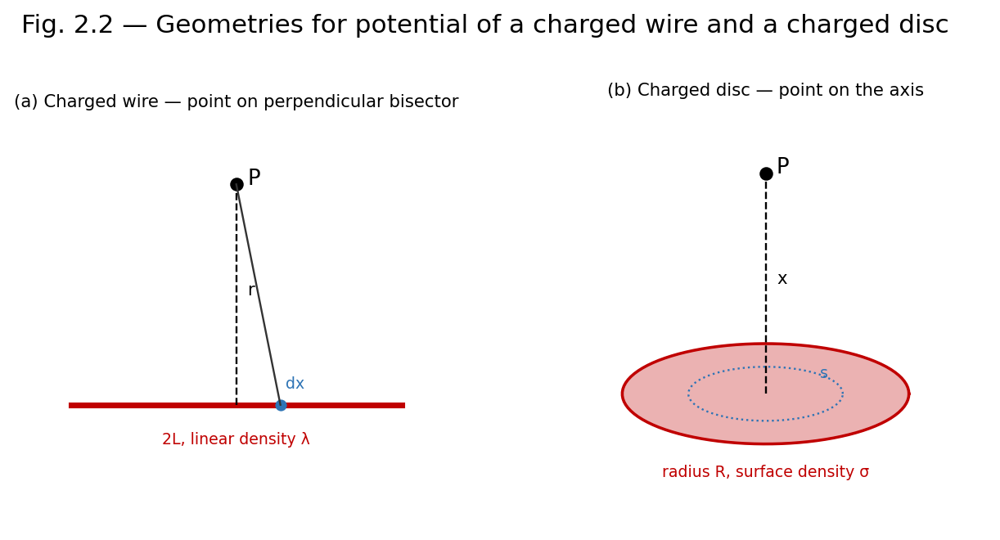
Fig. 2.2 — Geometry used to find the potential of (a) a uniformly charged straight wire and (b) a uniformly charged disc, at an axial/perpendicular field point P.
Consider a straight thin rod of length 2L carrying uniform linear charge density λ, lying along the axis with its centre at the origin. We find the potential at a point P on the perpendicular bisector, at a distance r from the centre of the rod.
An element dx of the rod at distance x from the centre carries charge dq = λ dx, and lies at distance √(r²+x²) from P. Its contribution to the potential is:
dV = (1/4πε₀) · λ dx / √(r²+x²)
Integrating from x = −L to x = +L:
V = (λ/4πε₀) ∫₋L^L dx/√(r²+x²) = (λ/4πε₀) ln[ (L+√(L²+r²)) / (−L+√(L²+r²)) ]
which can also be written using the inverse hyperbolic sine as V = (λ/2πε₀) sinh⁻¹(L/r). Differentiating V with respect to r (with a sign change) gives the field component perpendicular to the wire; for an infinitely long wire (L → ∞), this reduces exactly to the familiar result E = λ/2πε₀r obtained by Gauss's law in Unit 1, providing a valuable cross-check between the two methods.
Consider a thin disc of radius R carrying a uniform surface charge density σ. We find the potential and field at a point P on the axis of the disc, at a distance x from its centre.
Divide the disc into concentric rings of radius s and thickness ds, each carrying charge dq = σ(2πs ds). Every point of such a ring is at the same distance √(x²+s²) from P, so its contribution to the potential is:
dV = (1/4πε₀) · σ(2πs ds) / √(x²+s²)
Integrating over the whole disc, from s = 0 to s = R:
V(x) = (σ/2ε₀) [ √(x²+R²) − x ]
The axial field is obtained from E = −∂V/∂x:
E(x) = (σ/2ε₀) [ 1 − x/√(x²+R²) ]
For R → ∞ (infinite sheet): E → σ/2ε₀, recovering the infinite-sheet result of Unit 1.
For x ≫ R (far from a small disc): expanding the square root shows E → σR²/(4ε₀x²) = Q/(4πε₀x²), i.e. the disc behaves as a point charge Q = σπR² at large distances.
Note: The charged disc calculation elegantly bridges the point-charge and infinite-sheet limits studied earlier, and is a standard problem for practising superposition-by-integration techniques.
Example: Potential due to two point charges
Charges of +4 μC and −2 μC are placed 30 cm apart. Find the potential at the midpoint of the line joining them.
V = (1/4πε0)[q1/r1 + q2/r2] = 9×10⁹[(4×10⁻⁶)/0.15 + (−2×10⁻⁶)/0.15] = 9×10⁹ × (2×10⁻⁶/0.15) = 1.2×10⁵ V.
Example: Potential energy of a three-charge system
Three charges q1 = 1 μC, q2 = 2 μC, q3 = −1 μC are placed at the corners of an equilateral triangle of side 10 cm. Find the total electrostatic potential energy.
U = (1/4πε0)[q1q2/r12 + q2q3/r23 + q1q3/r13] = 9×10⁹ × (10⁻¹²)[ (1×2) + (2×(−1)) + (1×(−1)) ] / 0.1
= 9×10⁹ × 10⁻¹² × (2 − 2 − 1)/0.1 = 9×10⁹ × 10⁻¹² × (−10) = −0.09 J.
Define electric potential and electric potential difference. Give their SI units.
What is meant by a conservative field? Show that the electrostatic field is conservative.
Write the relation between E and V, and explain the physical meaning of the negative sign.
What are equipotential surfaces? State two of their properties.
Why is no work done in moving a charge along an equipotential surface?
Define electrostatic potential energy of a system of two point charges.
Derive the expression for the electric potential due to a uniformly charged straight wire at a point on its perpendicular bisector, and deduce the field of an infinitely long wire.
Derive the potential and electric field at a point on the axis of a uniformly charged circular disc. Discuss the limiting cases R→∞ and x≫R.
Show that E = −∇V, starting from the definition of potential difference as a line integral of E.
Derive the expression for the potential energy of a system of n point charges.
A point charge of 5 μC is placed at the origin. Find the potential at a distance of 20 cm. [Ans: 2.25×10⁵ V]
The potential at a point due to a point charge is 9×10⁴ V at a distance of 10 cm. Find the magnitude of the charge. [Ans: 1 μC]
A charged disc of radius 5 cm has surface charge density 4 μC/m². Find the potential at a point 12 cm from the centre on the axis.
Two points on the axis of a uniformly charged rod are at potentials 500 V and 300 V. If the field is uniform between them and they are 4 cm apart, find E.
1. Electric potential is a: (a) vector (b) scalar (c) tensor (d) none of these — Answer: (b)
2. The relation between E and V is: (a) E = ∇V (b) E = −∇V (c) V = ∇E (d) V = −∇E — Answer: (b)
3. Work done in moving a charge on an equipotential surface is: (a) maximum (b) zero (c) negative (d) infinite — Answer: (b)
4. For a conservative field, ∮E·dl equals: (a) Qenc/ε0 (b) zero (c) infinity (d) μ0Ienc — Answer: (b)
5. The potential on the axis of a charged disc at very large x behaves like: (a) a line charge (b) a point charge (c) a sheet of charge (d) zero — Answer: (b)
An equipotential surface is a surface on which the electric potential V has the same value at every point. For a point charge, equipotential surfaces are concentric spheres centred on the charge; for an infinite charged sheet, they are planes parallel to the sheet; for an infinite line charge, they are coaxial cylinders.
The electric field is always perpendicular to an equipotential surface at every point, since any component of E along the surface would drive charge to move and do work, contradicting V being constant there.
No work is done in moving a charge along an equipotential surface, since W = q(VA − VB) = 0 when VA = VB.
Equipotential surfaces can never intersect one another, since a point cannot simultaneously be at two different potentials.
Equipotential surfaces are more closely spaced where the field is stronger, since |E| = −dV/dn (n being the direction normal to the surfaces), so a rapid change in V over a short distance implies closely packed surfaces.
For an electric dipole of moment p, the potential at a point P at distance r from the centre of the dipole, where the line OP makes angle θ with the dipole axis (r ≫ separation of charges), is obtained by superposing the potentials of the two charges and expanding to leading order in d/r:
V(r, θ) = (1/4πε₀) · (p cosθ) / r²
Notice that the dipole potential falls off as 1/r², one power of r faster than the point-charge potential (1/r), consistent with the field of a dipole falling off as 1/r³ (one power faster than the point-charge field 1/r²) as noted in Unit 1. Differentiating V with respect to r and θ (using E = −∇V in spherical coordinates) reproduces the axial and equatorial field expressions of Section 1.8 as special cases θ = 0 and θ = π/2 respectively.
| Quantity | Defining Relation |
| Potential difference | VB − VA = −∫A→B E·dl |
| Potential of a point charge | V = Q/4πε₀r |
| Field from potential | E = −∇V |
| Conservative field condition | ∮E·dl = 0 ⇔ ∇×E = 0 |
| Energy of point-charge system | U = (1/2)Σ qiVi |
| Potential on axis of charged disc | V = (σ/2ε₀)[√(x²+R²) − x] |
UNIT 3
Magnetic Field
Lorentz force: F = q(E + v×B) — the magnetic part acts only on moving charges and does no work (always perpendicular to velocity).
Biot–Savart law: dB = (μ₀/4π) I dl×r̂/r² gives the magnetic field due to a current element; integrated over standard geometries it yields, e.g., B = μ₀I/2πr for an infinite straight wire and B = μ₀NI/2R at the centre of a circular coil.
Ampere's circuital law: ∮B·dl = μ₀Ienc — the magnetostatic analogue of Gauss's law, efficient for high-symmetry current distributions (solenoid, toroid, infinite wire).
Magnetic dipole: a current loop of magnetic moment m = IA experiences torque τ = m × B in an external field, analogous to the electric dipole case.
Magnetic materials: diamagnetic materials (χm small and negative) are weakly repelled by a field; paramagnetic materials (χm small and positive) are weakly attracted; ferromagnetic materials (χm large and positive, history-dependent) show spontaneous magnetization and hysteresis.
A moving charge or a current experiences a force in a region of space where a magnetic field is present, in addition to any electric force. The magnetic field B at a point is defined operationally through the force experienced by a test charge q moving with velocity v:
F = q (v × B)
Combined with the electric force, this gives the full Lorentz force law:
F = q (E + v × B)
Unlike the electric force, the magnetic force is always perpendicular to the velocity of the charge, and therefore does no work on it — it can change the direction of motion but never the speed or kinetic energy of the particle. The SI unit of B is the tesla (T), where 1 T = 1 N·s/(C·m) = 1 Wb/m² = 1 kg/(A·s²).
A current-carrying conductor consists of moving charges, so it experiences a force in a magnetic field. For a current element I dl (a small length dl of wire carrying current I), the force in a field B is:
dF = I dl × B
The mutual force between two current elements follows from combining this expression with the Biot–Savart law (Section 3.4): a current element I1 dl1 produces a field dB at the location of a second element I2 dl2, and by Ampere's force law, the resulting mutual force is:
dF = (μ0/4π) · I1 I2 [dl2 × (dl1 × r̂)] / r²
where r is the separation between the elements and μ0 = 4π×10⁻⁷ T·m/A is the permeability of free space. This experimentally-motivated force law between current elements is, historically, the basis from which the magnetic field B and the Biot–Savart law are derived, in a manner directly analogous to how Coulomb's law between charges leads to the electric field E.
Operationally, B at a point can therefore be defined as the vector quantity such that the force per unit length experienced by a current element placed there is dF/dl = I dl × B, with B being independent of the test current used to probe it, exactly as E is independent of the test charge.
Magnetic flux ΦB through a surface is defined analogously to electric flux:
ΦB = ∫∫S B · dA
with SI unit the weber (Wb), where 1 Wb = 1 T·m². Magnetic flux plays a central role in Faraday's law of electromagnetic induction (Unit 5). Because, as shown in Unit 4, magnetic field lines never begin or end (there are no magnetic monopoles), the net magnetic flux through any closed surface is always exactly zero — a result known as Gauss's law for magnetism.
The Biot–Savart law gives the magnetic field produced at a point P by a current element I dl located at position r relative to P:
dB = (μ0/4π) · I dl × r̂ / r²
The direction of dB is perpendicular to both dl (the direction of current flow) and r̂ (the line joining the element to P), given by the right-hand rule. The total field due to an extended current-carrying conductor is found by integrating this expression over the entire current path.
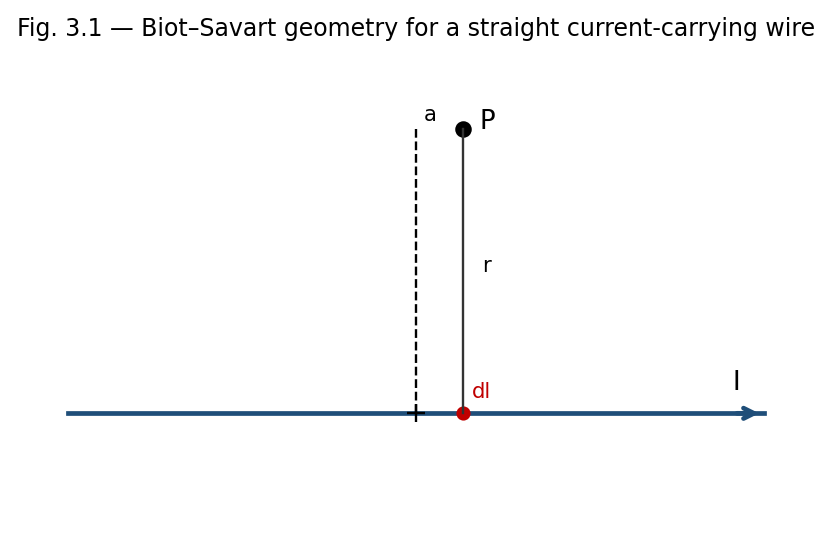
Fig. 3.1 — A current element I dl produces a field dB at P, perpendicular to both dl and the line r joining the element to P.
Strictly, the law applies to steady (time-independent) currents; an isolated current element I dl, as used in the derivation, is itself an idealisation, since in practice current can only flow in complete closed circuits (charge cannot accumulate indefinitely at the ends of an open element).
Direct integration using the Biot–Savart law can be mathematically demanding for conductors lacking symmetry, in which case Ampere's law (Section 3.5), when applicable, is often calculationally simpler.
Calculating the field of current-carrying wires, loops, and coils of arbitrary shape, forming the basis for the design of electromagnets, solenoids, and inductors.
Modelling the magnetic field of localised current distributions in geophysics and astrophysics (e.g. planetary and stellar magnetic fields generated by internal current systems).
Providing the theoretical foundation from which Ampere's circuital law itself can be derived for steady currents.
Consider a straight wire carrying current I, and a field point P at perpendicular distance a from the wire. Let an element dl of the wire, at position x along the wire measured from the foot of the perpendicular, make angle θ with the line joining it to P. Using dl × r̂ = dl sinθ, and expressing x = a cotθ (so dx = −a cosec²θ dθ) and r = a/sinθ, the Biot–Savart law integrates to:
B = (μ0 I / 4πa) ∫θ1→θ2 sinθ dθ = (μ0 I / 4πa)(cosθ1 − cosθ2)
For an infinitely long straight wire, the limits become θ1 → 0 and θ2 → π, giving cosθ1 − cosθ2 = 2, so:
B = μ0 I / (2πa)
The field circles the wire in concentric loops, with direction given by the right-hand (grip) rule: if the thumb points along the current, the curled fingers indicate the direction of B.
Example: Field near a long straight wire
A long straight wire carries a current I = 10 A. Find B at a perpendicular distance of 5 cm.
B = μ0I/2πa = (4π×10⁻⁷ × 10)/(2π × 0.05) = 4×10⁻⁵ T = 40 μT.
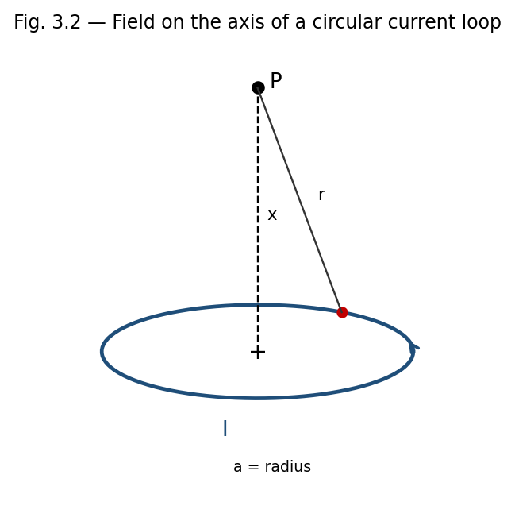
Fig. 3.2 — Geometry for the axial field of a circular current loop of radius a.
Consider a circular loop of radius a carrying current I, and a field point P on its axis at distance x from the centre. Every element dl of the loop is at the same distance r = √(a²+x²) from P, and dl is always perpendicular to r (since r lies in the plane containing the axis and the radius to the element, while dl is tangential). Hence each element contributes a field dB = (μ0 I dl)/(4πr²), directed perpendicular to r in a plane containing the axis.
By symmetry, only the components of dB along the axis add up; the perpendicular components cancel for diametrically opposite elements. The axial component is dB sinφ = dB(a/r), so:
Bx = (μ0 I / 4πr²)(a/r) ∮ dl = (μ0 I / 4πr³)(a)(2πa) = μ0 I a² / [2(a²+x²)^(3/2)]
At the centre of the loop (x = 0), this reduces to the simple and important result:
B(centre) = μ0 I / (2a)
For x ≫ a, the field falls off as B ≈ μ0 I a² / (2x³), and the loop behaves as a magnetic dipole of moment m = I(πa²), with axial field B ≈ μ0 m / (2πx³).
Ampere's law relates the line integral of B around any closed loop to the total (steady) current passing through the loop, and is the magnetic analogue of Gauss's law in electrostatics.
∮C B · dl = μ0 Ienc
where Ienc is the net current enclosed by the closed loop (Amperian loop) C, counted positive or negative according to the right-hand rule relative to the sense of traversal of C. As with Gauss's law, this relation is most useful when symmetry allows a loop to be chosen along which B is constant in magnitude and either parallel or perpendicular to dl.
Applying Stokes' theorem, ∮B·dl = ∫∫(∇×B)·dA, and writing Ienc = ∫∫J·dA in terms of the current density J, we obtain the local (differential) form of Ampere's law for steady currents:
∇ × B = μ0 J
(For time-varying fields, Maxwell later added a displacement-current term ε0∂E/∂t to the right-hand side; this modification is not required for the static cases treated in this unit.)
As originally stated (without Maxwell's displacement-current correction), Ampere's law applies strictly only to steady currents; it fails to give consistent results for circuits with time-varying currents, such as a charging capacitor, unless the displacement-current term is included.
Like Gauss's law, Ampere's law gives the field directly only when symmetry permits an Amperian loop on which B is constant in magnitude and either parallel or perpendicular to dl at every point.
Rapid calculation of B for highly symmetric current distributions — straight wires, solenoids, toroids — as illustrated below.
Design of solenoids and electromagnets used in relays, MRI machines, and particle accelerators.
Derivation of the boundary conditions on B and H at the interface between two magnetic media (Section 4.8A).
A solenoid is a long, tightly wound helical coil of wire; treated as n turns per unit length carrying current I, an ideal (infinitely long) solenoid produces a uniform field inside, parallel to its axis, and (ideally) zero field outside.
Choose a rectangular Amperian loop, with one long side of length L lying inside the solenoid parallel to the axis, the opposite long side lying far outside the solenoid, and two short sides perpendicular to the axis. The contribution from the outside segment is zero (B ≈ 0 there), the contributions from the two perpendicular segments vanish (B ⊥ dl inside, and B ≈ 0 outside), and only the interior long side contributes:
∮B·dl = B L = μ0 Ienc = μ0 (nL) I
B = μ0 n I
directed along the axis. This uniform-field result is independent of the position of the loop's interior side within the solenoid (as long as it is far from the ends) and independent of the cross-sectional shape of the solenoid.
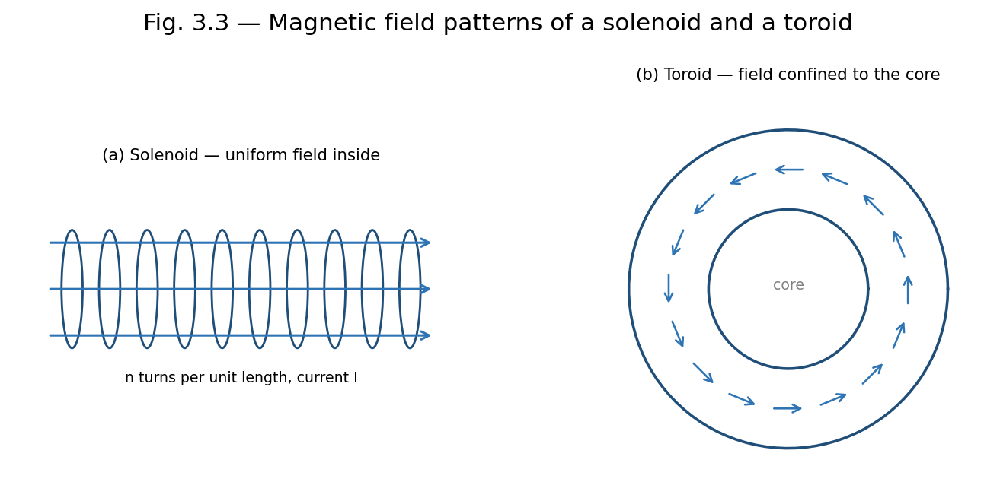
Fig. 3.3 — Field patterns: (a) an ideal solenoid confines a uniform field to its interior; (b) a toroid confines its (1/r-varying) field entirely to its core.
A toroid is a solenoid bent into a closed ring (doughnut) shape, with N total turns carrying current I. By the cylindrical symmetry of the toroid, B is everywhere tangential to circles concentric with the toroid's central axis, and constant in magnitude on any such circle of radius r within the toroid's core.
Choosing an Amperian loop to be such a circle of radius r, threading through all N turns:
∮B·dl = B(2πr) = μ0 Ienc = μ0 N I
B = μ0 N I / (2πr)
valid for r within the core of the toroid. Outside the toroid (both inside the central hole and beyond the outer radius), the net enclosed current for any concentric Amperian loop is zero (each turn crosses the loop's plane twice, once in each direction), so B = 0 in those regions — the field of a toroid is, ideally, entirely confined within its core, unlike a straight solenoid which has some fringing field near its ends.
Note: A toroid can be thought of as an 'endless' solenoid: bending a solenoid into a closed loop eliminates the end effects and confines the field entirely to the core, at the price of the field no longer being perfectly uniform in magnitude (it varies as 1/r across the cross-section).
When a charged particle of mass m and charge q moves with velocity v perpendicular to a uniform magnetic field B, the magnetic force F = qv×B is always perpendicular to v, and hence perpendicular to the particle's motion at every instant. Since the force has no component along the velocity, it does no work and cannot change the particle's speed — it only continuously changes the direction of v, producing uniform circular motion.
The magnetic force provides exactly the centripetal force needed for this circular motion:
qvB = m v² / r ⇒ r = mv / (qB)
The angular frequency of this circular motion, called the cyclotron frequency, is:
ω = qB/m, with period T = 2πm/(qB)
Remarkably, both ω and T are independent of the particle's speed v (and hence of its kinetic energy) — a faster particle simply moves in a proportionally larger circle, completing each revolution in the same time. This property is the operating principle of the cyclotron, a device used to accelerate charged particles to high energies using a fixed-frequency alternating voltage synchronised with this constant cyclotron frequency. If the particle also has a velocity component parallel to B, that component is unaffected by the magnetic force (since v×B = 0 along B), and the resulting motion is a helix — uniform circular motion perpendicular to B combined with uniform straight-line motion parallel to B.
A straight conductor of length l carrying current I, placed in a uniform field B, experiences a net force (integrating dF = I dl×B over its length):
F = I l × B, magnitude F = BIl sinθ
where θ is the angle between the conductor and B. When a planar current loop of area A (carrying current I) is placed in a uniform field B, the net force on the loop is zero, but a net torque acts on it, tending to align its magnetic moment m = IA n̂ with B:
τ = m × B, magnitude τ = BIA sinθ
where θ is the angle between the normal to the loop and B. This torque is the operating principle of DC motors and moving-coil galvanometers.
Example: Force between two parallel current-carrying wires
Two long straight parallel wires, 5 cm apart, carry currents of 3 A and 4 A in the same direction. Find the force per unit length between them.
F/l = μ0I1I2/2πd = (4π×10⁻⁷ × 3 × 4)/(2π × 0.05) = 4.8×10⁻⁵ N/m, attractive (parallel currents attract).
Example: Field at the centre of a current loop
A circular coil of 50 turns and radius 4 cm carries a current of 2 A. Find the field at the centre.
B = μ0NI/2a = (4π×10⁻⁷ × 50 × 2)/(2 × 0.04) = 1.57×10⁻³ T.
Example: Solenoid field
A solenoid 50 cm long has 1000 turns and carries a current of 5 A. Find the field inside (away from the ends).
n = N/l = 1000/0.5 = 2000 turns/m. B = μ0nI = 4π×10⁻⁷ × 2000 × 5 = 1.26×10⁻² T.
Define magnetic field B in terms of the force on a moving charge. Write its SI unit.
State the Biot–Savart law and explain each term in the expression.
Why does the magnetic force do no work on a moving charge?
State Ampere's circuital law in integral and differential form.
Compare the magnetic field inside a solenoid and inside a toroid.
Why is the field outside an ideal toroid zero, while a straight solenoid has some external fringing field?
Using the Biot–Savart law, derive the expression for the magnetic field due to a long straight current-carrying conductor.
Derive the expression for the magnetic field on the axis of a circular current loop, and deduce the field at its centre.
State and prove Ampere's circuital law, and use it to derive the field inside a long solenoid.
Using Ampere's law, derive the expression for the magnetic field inside a toroid, and explain why it varies with r.
Derive the differential form of Ampere's circuital law from its integral form using Stokes' theorem.
Calculate the magnetic field at a distance of 15 cm from a long straight wire carrying a current of 6 A. [Ans: 8×10⁻⁶ T]
A circular loop of radius 6 cm carries a current of 4 A. Find the field at a point on its axis 8 cm from the centre.
A toroid has a mean radius of 10 cm, 500 turns, and carries a current of 2 A. Find the field within its core. [Ans: 2×10⁻³ T]
Two parallel wires 10 cm apart carry currents of 2 A and 5 A in opposite directions. Find the force per unit length between them and state whether it is attractive or repulsive.
1. The SI unit of magnetic field B is: (a) weber (b) tesla (c) henry (d) gauss only — Answer: (b)
2. The magnetic field at the centre of a circular loop of radius a carrying current I is: (a) μ0I/2πa (b) μ0I/2a (c) μ0I/4πa (d) μ0Ia/2 — Answer: (b)
3. Ampere's circuital law relates ∮B·dl to: (a) enclosed charge (b) enclosed current (c) magnetic flux (d) potential difference — Answer: (b)
4. Inside an ideal long solenoid, the magnetic field is: (a) zero (b) uniform (c) varies as 1/r (d) varies as r — Answer: (b)
5. Two parallel wires carrying current in the same direction: (a) repel (b) attract (c) exert no force (d) rotate — Answer: (b)
| Source | Field | Location |
| Infinite straight wire | B = μ0I/2πa | distance a from wire |
| Centre of circular loop | B = μ0I/2a | loop centre |
| On axis of circular loop | B = μ0Ia²/2(a²+x²)^(3/2) | distance x from centre |
| Ideal solenoid (interior) | B = μ0 n I | inside, away from ends |
| Toroid (within core) | B = μ0NI/2πr | inside the core |
UNIT 4
Magnetic Properties
Faraday's law: EMF = −dΦB/dt — a changing magnetic flux through a circuit induces an EMF; Lenz's law fixes the sign, stating the induced current opposes the change that produced it (energy conservation).
Self-inductance L relates flux linkage to current in the same circuit (Φ = LI); mutual inductance M relates flux linkage in one circuit to current in a neighbouring circuit. Energy stored in an inductor: U = ½LI².
AC fundamentals: a sinusoidal source v(t) = V₀ sin(ωt) has RMS value V₀/√2; phasor representation converts differential equations for R, L, C elements into simple algebraic ones using complex impedance ZR=R, ZL=jωL, ZC=1/jωC.
Series RLC resonance occurs when ωL = 1/ωC, i.e. ω₀=1/√(LC), where impedance is purely resistive and current is maximum (series) or minimum (parallel/anti-resonance).
Power in AC circuits: real power P = VI cosφ (does actual work); reactive power Q = VI sinφ (oscillates between source and reactive elements); apparent power S = VI; power factor cosφ = P/S indicates how effectively power is being used.
All materials respond to an applied magnetic field to some degree, because the orbital motion and intrinsic spin of electrons endow atoms with tiny magnetic dipole moments. When a material is placed in an external field, these atomic dipoles are affected — realigned, induced, or partially cancelled — producing a net magnetisation that either reinforces or opposes the applied field. Materials are broadly classified as diamagnetic, paramagnetic, or ferromagnetic according to the nature and strength of this response, discussed further in Section 4.8.
Unlike electric charges, isolated magnetic 'charges' (monopoles) have never been observed in nature — magnetic field lines always form closed loops, emerging from a north pole and re-entering at a south pole, continuing inside the magnet back to the north pole. Consequently, the net magnetic flux through any closed surface is always zero, regardless of the surface's shape or its location relative to magnets or currents.
∮S B · dA = 0
Applying the divergence theorem, ∮B·dA = ∫∫∫(∇·B) dV, and since this vanishes for every arbitrary volume, the integrand itself must vanish everywhere:
∇ · B = 0
This is one of Maxwell's four equations and expresses, in local form, the absence of magnetic monopoles. It is the magnetic analogue of Gauss's law for electricity, ∇·E = ρ/ε0, but with zero on the right-hand side because there is no magnetic charge density to source or sink the field lines.
Confirms that magnetic field lines always form closed loops, justifying the closed-loop sketches used throughout Unit 3 (e.g. around a straight wire, solenoid, or toroid).
Provides one of the four fundamental Maxwell's equations, essential to the unified theory of electromagnetism and electromagnetic waves.
Used, together with Ampere's and Faraday's laws, to establish the boundary condition B1⊥ = B2⊥ at an interface between two media (Section 4.8A).
Gauss's law of magnetism is exact and universally valid within classical electromagnetism (no experimental violation — i.e., no isolated magnetic monopole — has ever been confirmed); its 'limitation' is therefore conceptual rather than practical: certain theoretical extensions of physics (e.g. some grand unified theories) predict magnetic monopoles might exist, which would require modifying this law to ∇·B = ρm (a magnetic charge density), but no experimental evidence for this currently exists.
When a magnetic material is placed in an external field, the atomic current loops (associated with electron orbital and spin motion) tend to align, so that within the bulk of a uniformly magnetised material the microscopic currents of adjacent atomic loops cancel, but at the surface of the material an uncompensated net current remains. This effective surface current, called the magnetisation current or bound current, produces a magnetic field just as a real (free) conduction current would.
For a uniformly magnetised cylinder with magnetisation M along its axis, the equivalent surface current density (current per unit length along the axis) is:
Km = M × n̂
which, for a cylinder magnetised along its axis, reduces in magnitude to Km = M. In addition, if the magnetisation is non-uniform, a volume magnetisation (bound) current density arises:
Jm = ∇ × M
The total current density in a magnetic material is therefore the sum of the free (conduction) current density Jf and the bound current density Jm: J = Jf + Jm. The distinction between free and bound currents is essential for correctly applying Ampere's law inside magnetic materials, motivating the introduction of the auxiliary field H below.
The magnetic susceptibility χm of a material characterises how readily it becomes magnetised in response to an applied field, defined through the linear relation (valid for isotropic, linear, non-ferromagnetic materials):
M = χm H
where M is the magnetisation (magnetic dipole moment per unit volume) and H is the magnetic field intensity (Section 4.5). The relative permeability μr is related to χm by:
μr = 1 + χm
and the absolute permeability of the material is μ = μr μ0, where μ0 is the permeability of free space. Materials are classified by the sign and magnitude of χm:
| Type | χm | μr | Typical Example |
| Diamagnetic | small, negative (~ −10⁻⁵) | slightly < 1 | Bismuth, copper, water |
| Paramagnetic | small, positive (~ +10⁻³ to 10⁻⁵) | slightly > 1 | Aluminium, platinum, oxygen |
| Ferromagnetic | large, positive (up to ~10⁵), non-linear | ≫ 1, field- and history-dependent | Iron, cobalt, nickel |
The magnetisation vector M is defined as the net magnetic dipole moment per unit volume of a material:
M = dm / dV
where dm is the total magnetic dipole moment contained in a small volume dV. The magnetic field intensity (or auxiliary field) H is introduced to separate the contribution of free currents from that of bound (magnetisation) currents, allowing Ampere's law to be applied using only the free current, which is typically the experimentally controllable quantity:
H = B/μ0 − M
Rearranging, the fundamental relation connecting the three vectors is:
B = μ0 (H + M)
For linear, isotropic materials where M = χmH, substituting gives:
B = μ0(1 + χm) H = μ0 μr H = μH
Ampere's law can then be restated directly in terms of H and the free current alone, independent of the (generally unknown) bound currents:
∮ H · dl = Ifree,enc
Note: This H-based form of Ampere's law is exactly analogous to how the D field (electric displacement) is used in dielectrics to separate free and bound charge; H plays the role of D in magnetostatics.
The energy density stored in a magnetic field within a linear magnetic medium is given, in analogy with the electrostatic energy density (ε0E²/2), by:
u = (1/2) B · H = (1/2) μ H² = B² / (2μ)
The total magnetic energy stored in a volume V is obtained by integrating this density:
Um = (1/2) ∫V B · H dV
For an inductor (see Unit 5) filled with a magnetic core of permeability μ, this expression is consistent with the circuit-theory result Um = (1/2)LI², where L is the self-inductance, since increasing μ increases both B (for a given free current) and hence L.
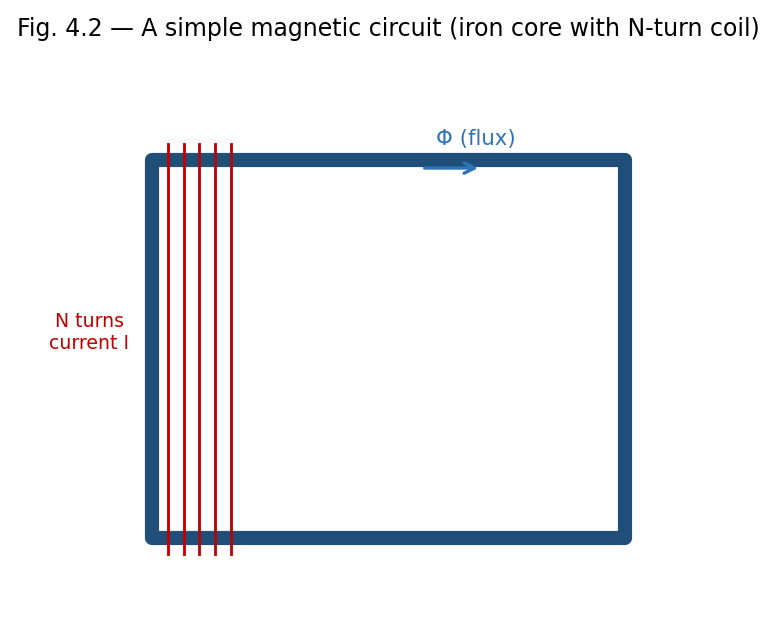
Fig. 4.2 — A simple magnetic circuit: an N-turn coil establishes a flux Φ around a closed ferromagnetic core.
A magnetic circuit is a closed path (often through a ferromagnetic core, such as in a transformer or electromagnet) along which magnetic flux is guided, analogous to how an electric circuit guides current along a conducting path. The analogy between magnetic and electric circuits is summarised below:
| Electric Circuit | Magnetic Circuit |
| EMF, ε | Magnetomotive force, MMF = NI |
| Current, I | Magnetic flux, Φ |
| Resistance, R = ρl/A | Reluctance, R = l/(μA) |
| Ohm's law: ε = IR | Φ = MMF / R = NI/R |
For a magnetic circuit consisting of a core of mean length l, cross-sectional area A, permeability μ, and N turns of wire carrying current I, the reluctance is R = l/(μA), and the resulting flux is Φ = NI/R = μNIA/l. Series and parallel combinations of reluctances (for composite cores, or cores with air gaps) are combined by rules directly analogous to series and parallel resistances; an air gap, having μ ≈ μ0 rather than the much larger μ of the ferromagnetic core, typically dominates the total reluctance of a practical magnetic circuit even if it is physically very thin.
For ferromagnetic materials, the relationship between B and H is not linear, and moreover depends on the material's magnetic history — a phenomenon called hysteresis. Starting from an unmagnetised sample (B = H = 0) and increasing H, B rises along an initial magnetisation curve, rising steeply at first, then bending over and saturating (Bsat) as essentially all atomic magnetic domains become aligned with the field.
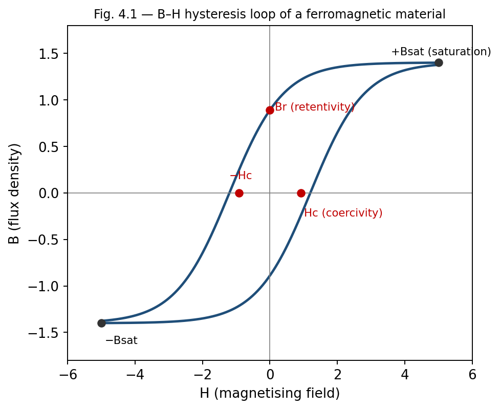
Fig. 4.1 — The B–H hysteresis loop, showing saturation (±Bsat), retentivity (Br) and coercivity (Hc).
If H is now reduced from its maximum value back to zero, B does not retrace the original curve but instead remains at a positive value called the retentivity or remanent magnetisation (Br) — the material retains some magnetisation even with no applied field, which is the basis of permanent magnets.
To reduce B to zero, a reversed field of magnitude Hc, called the coercivity or coercive force, must be applied.
Continuing to increase the reversed field drives the material to saturation in the opposite direction (−Bsat); reducing and reversing H again traces out a similar path back to +Bsat.
The complete closed curve traced out over one full cycle of H is called the hysteresis loop.
Each time a ferromagnetic sample is taken around a complete hysteresis cycle, energy is dissipated as heat within the material, due to the work done in reorienting magnetic domains against internal friction-like resistance. It can be shown that the energy dissipated per unit volume per cycle exactly equals the area enclosed by the B–H hysteresis loop:
Wh = ∮ H dB (area of the loop, per unit volume, per cycle)
This hysteresis loss is a significant source of energy dissipation in AC devices such as transformers and motors, and is minimised in their design by using 'soft' magnetic materials (e.g., silicon steel) which have narrow hysteresis loops (low Hc, low loop area). Conversely, 'hard' magnetic materials, with wide hysteresis loops and high retentivity and coercivity, are chosen for permanent magnets, where retaining magnetisation is desirable rather than a drawback.
Example: Comparing soft and hard magnetic materials
Soft iron: narrow hysteresis loop, low coercivity, used in transformer cores and electromagnets, where the field must be reversed rapidly (e.g., 50 Hz) with minimal energy loss.
Steel/Alnico: wide hysteresis loop, high coercivity and retentivity, used for permanent magnets, where resistance to demagnetisation is essential.
Selecting soft magnetic materials (narrow loop) for transformer and motor cores to minimise hysteresis loss and heating.
Selecting hard magnetic materials (wide loop, high Br and Hc) for permanent magnets, magnetic recording media, and magnetic memory devices.
Estimating hysteresis power loss in AC machinery from the measured loop area and operating frequency, an important part of electrical machine design.
The hysteresis loop is not a fixed material property in the strictest sense — its shape depends on the maximum applied field, temperature, and mechanical stress history of the sample.
Above the Curie temperature, the entire hysteresis phenomenon disappears as the material becomes paramagnetic, so hysteresis-loop parameters (Br, Hc) are only meaningful below Tc.
At the interface between two magnetic media of differing permeability (or between a magnetic material and free space), the fields B and H must satisfy certain matching (boundary) conditions, derived by applying Gauss's law of magnetism and Ampere's law to small pillbox and loop constructions straddling the interface, exactly as is done for D and E at a dielectric interface in electrostatics.
The normal component of B is continuous across the interface: B1⊥ = B2⊥ (a direct consequence of ∇·B = 0, applied to a thin pillbox).
The tangential component of H is continuous across the interface, provided there is no free surface current: H1∥ = H2∥ (a consequence of Ampere's law, ∮H·dl = Ifree,enc, applied to a thin rectangular loop straddling the boundary).
Since B = μH, the continuity of H∥ but not of B∥ (unless μ1 = μ2) means that field lines bend at the interface between two magnetic media of different permeability, in a manner analogous to the refraction of light — a high-permeability material such as iron tends to concentrate and channel B field lines within itself, which is the physical basis for using ferromagnetic cores to guide flux in transformers and electromagnets (Section 4.7).
The strong, non-linear response of ferromagnetic materials is explained by the existence of magnetic domains — microscopic regions (typically 10⁻⁶ to 10⁻⁴ m across) within which the atomic magnetic moments are already spontaneously aligned parallel to one another, due to strong quantum-mechanical exchange interactions between neighbouring atoms. In an unmagnetised sample, however, different domains point in different, randomly oriented directions, so the net macroscopic magnetisation is zero.
When an external field is applied, magnetisation proceeds by two mechanisms: (i) domains favourably oriented with respect to the field grow at the expense of unfavourably oriented neighbours, through the motion of domain walls, and (ii) at higher fields, the magnetisation direction within domains rotates to align more closely with the field. Saturation is reached when the sample effectively becomes a single domain aligned with the applied field. The domain-wall motion is not perfectly reversible — walls get pinned at crystal defects and impurities — which is the microscopic origin of hysteresis and coercivity discussed in Section 4.8.
Above a critical temperature called the Curie temperature (Tc), thermal agitation overcomes the exchange interaction, domains disappear, and the material becomes merely paramagnetic; for iron, Tc ≈ 1043 K (770°C).
Example: Magnetisation and relative permeability
A sample of paramagnetic material has H = 1000 A/m and acquires a magnetisation M = 2 A/m. Find its susceptibility χm and relative permeability μr.
χm = M/H = 2/1000 = 2×10⁻³. μr = 1 + χm = 1.002 (typical of a weak paramagnet).
Example: Reluctance of a magnetic circuit
An iron ring of mean circumference 40 cm and cross-sectional area 5 cm² has relative permeability 800. Find its reluctance, and the flux produced by a coil of 200 turns carrying 2 A wound on it.
R = l/(μ0μrA) = 0.4 / (4π×10⁻⁷ × 800 × 5×10⁻⁴) = 7.96×10⁵ A/Wb.
Φ = NI/R = (200×2)/7.96×10⁵ = 5.03×10⁻⁴ Wb.
State Gauss's law of magnetism in integral and differential form, and explain its physical significance.
Define magnetisation vector M and magnetic intensity H.
What is meant by bound (magnetisation) current? Distinguish it from free current.
Define magnetic susceptibility and relative permeability, and state the relation between them.
Distinguish between diamagnetic, paramagnetic and ferromagnetic materials on the basis of susceptibility.
What are retentivity and coercivity? Illustrate with reference to the B–H loop.
Why are soft magnetic materials preferred for transformer cores, while hard magnetic materials are used for permanent magnets?
Derive Gauss's law of magnetism in differential form from its integral form, and explain why there is no magnetic analogue of electric charge.
Derive the relation B = μ0(H + M), and explain the physical role played by H in Ampere's law for magnetic media.
Describe, with a labelled diagram, the B–H hysteresis loop of a ferromagnetic material, defining retentivity, coercivity, and saturation.
Explain the domain theory of ferromagnetism and use it to account for hysteresis and the existence of the Curie temperature.
Draw the analogy between electric and magnetic circuits and derive the expression for reluctance of a magnetic core.
A magnetic material has H = 2000 A/m and B = 3.0 T. Find μ, μr and χm.
The area of the hysteresis loop of a specimen corresponds to an energy loss of 200 J/m³ per cycle. Find the total energy lost per second in a 2 kg sample (density 7800 kg/m³) operating at 50 Hz.
An air-cored toroid has 300 turns, mean radius 8 cm, and cross-section 3 cm². Find the reluctance and the self-inductance of the winding.
A rod of paramagnetic material with χm = 2×10⁻⁴ is placed in a field H = 5000 A/m. Find its magnetisation M and the resulting B.
1. The divergence of B is always: (a) ρ/ε0 (b) zero (c) μ0J (d) infinite — Answer: (b)
2. For a paramagnetic material, χm is: (a) large and negative (b) small and positive (c) small and negative (d) large and positive — Answer: (b)
3. The area of the B–H hysteresis loop represents: (a) stored energy (b) energy loss per cycle per unit volume (c) coercivity (d) permeability — Answer: (b)
4. Reluctance in a magnetic circuit is analogous to which quantity in an electric circuit? (a) EMF (b) current (c) resistance (d) capacitance — Answer: (c)
5. Above the Curie temperature, a ferromagnetic material becomes: (a) diamagnetic (b) paramagnetic (c) superconducting (d) perfectly ferromagnetic — Answer: (b)
| Property | Diamagnetic | Paramagnetic | Ferromagnetic |
| Origin | Induced opposing dipoles (Lenz's law at atomic level); no permanent atomic dipole | Permanent atomic dipoles, weakly aligned by field, randomised by thermal agitation | Permanent atomic dipoles, strongly aligned within domains |
| Behaviour in field | Weakly repelled | Weakly attracted | Strongly attracted |
| Susceptibility χm | Small, negative, ~temperature-independent | Small, positive, decreases with T (Curie's law) | Large, positive, highly non-linear, T-dependent (Curie temperature) |
| Effect of removing field | Magnetisation vanishes immediately | Magnetisation vanishes (no memory) | Retains magnetisation (hysteresis, permanent magnets) |
| Examples | Bismuth, copper, gold, water | Aluminium, platinum, chromium, oxygen | Iron, cobalt, nickel, and their alloys |
UNIT 5
Electromagnetic Induction
Kirchhoff's laws: KCL (sum of currents at a node = 0) and KVL (sum of voltage drops around a loop = 0) are the basic tools for circuit analysis, derived from charge conservation and the conservative nature of the electrostatic field respectively (extended to quasi-static AC circuits).
Thevenin's theorem: any linear two-terminal network can be replaced by a single voltage source VTh in series with a resistance RTh. Norton's theorem is the dual: a current source IN in parallel with RN (RN=RTh).
Superposition theorem: in a linear circuit with multiple independent sources, the response (voltage or current) in any branch equals the sum of the responses caused by each source acting alone (other sources turned off — voltage sources shorted, current sources opened).
Maximum Power Transfer theorem: maximum power is delivered to a load when the load resistance equals the Thevenin resistance of the source network (RL=RTh).
Displacement current (Maxwell's correction to Ampere's law): Jd = ε₀∂E/∂t, needed to keep the continuity equation and Ampere's law consistent when charge accumulates on a capacitor plate.
Maxwell's equations (integral form): Gauss's law for E, Gauss's law for B (∮B·dA=0, no monopoles), Faraday's law, and the Ampere–Maxwell law. Together, in vacuum, they predict self-sustaining electromagnetic waves travelling at c = 1/√(μ₀ε₀), with energy flux given by the Poynting vector S = E×H.
Faraday discovered experimentally that a changing magnetic flux through a circuit induces an electromotive force (EMF) in that circuit, whether the change arises from a changing field, a moving circuit, or both. This phenomenon underlies the operation of generators, transformers, and inductors.
ε = ∮C E · dl = − dΦB/dt
where ΦB = ∫∫S B·dA is the magnetic flux through any surface S bounded by the closed loop C, and ε is the induced EMF around the loop. The negative sign encodes Lenz's law (Section 5.2): the induced EMF always acts to oppose the change in flux that produced it. For a coil of N turns, the induced EMF is amplified by the number of turns:
ε = − N dΦB/dt
Applying Stokes' theorem to the left side, ∮E·dl = ∫∫(∇×E)·dA, and writing dΦB/dt = ∫∫(∂B/∂t)·dA, we obtain, since the surface S is arbitrary:
∇ × E = − ∂B/∂t
This is one of Maxwell's four equations, and represents a profound departure from electrostatics: a time-varying magnetic field creates an electric field with non-zero curl — one that is no longer conservative and cannot be derived from a single-valued scalar potential alone. This induced E field is the mechanism by which EMF is generated in a stationary conductor placed in a changing magnetic field.
Note: Flux can change due to (i) a time-varying B with a stationary loop, (ii) a moving or deforming loop in a static but non-uniform field, or (iii) a rotating loop in a uniform field (the principle of the AC generator). Whatever the cause, Faraday's law ε = −dΦB/dt applies universally.
AC and DC generators, converting mechanical rotational energy into electrical energy (Section 5.5).
Transformers, which transfer electrical power between circuits via mutual induction (Section 5.0B).
Induction cooktops and induction furnaces, which use induced eddy currents for direct heating.
Metal detectors and electromagnetic flow meters, which detect changes in flux caused by a moving or conducting object.
Wireless (inductive) charging systems, which transfer power between coils via a time-varying magnetic field.
Faraday's law in the form ε = −dΦB/dt gives only the net EMF around a loop; determining the actual current requires additionally knowing the circuit's resistance and any other EMF sources, via Ohm's law/Kirchhoff's laws.
For circuits in relative motion at speeds approaching the speed of light, the simple flux-rule picture must be supplemented by full relativistic electrodynamics, though this is far outside the non-relativistic scope of this course.
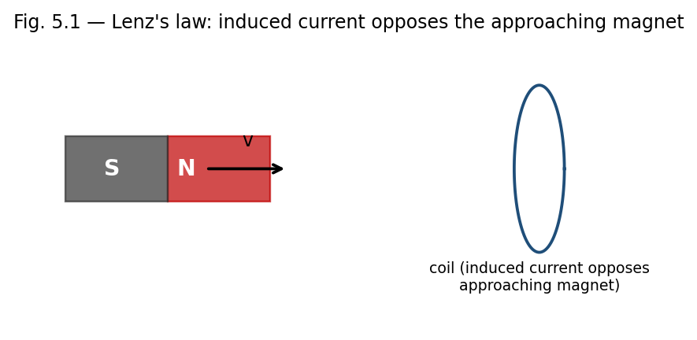
Fig. 5.1 — As the magnet's north pole approaches the coil, the induced current creates a field that opposes the approach (Lenz's law).
Lenz's law states that the direction of an induced current is always such as to oppose the change in magnetic flux that produces it. Physically, this is a manifestation of energy conservation: if the induced current instead reinforced the change in flux, the process would be self-amplifying, generating energy from nothing, in violation of the first law of thermodynamics.
Lenz's law is already built into the minus sign of Faraday's law, ε = −dΦB/dt, but it is a useful qualitative tool for quickly determining the direction of induced currents without detailed calculation:
If flux through a loop is increasing, the induced current flows in a direction that creates a magnetic field opposing the increase (i.e., opposite to the original field, inside the loop).
If flux is decreasing, the induced current flows so as to reinforce the original field, opposing the decrease.
As a corollary, a moving magnet approaching a coil always experiences a retarding (repulsive) force from the induced current, and receding always experiences an attractive force — in either case, opposing the relative motion.
Example: Direction of induced current
A bar magnet's north pole approaches a circular loop of wire, increasing the flux through the loop (into the page, say). By Lenz's law, the induced current opposes this increase, flowing so as to create a field out of the page inside the loop — that is, counterclockwise as viewed from the approaching magnet. This makes the near face of the loop effectively a north pole, repelling the approaching magnet, consistent with energy conservation (work must be done to push the magnet closer).
When current flows in a circuit, it produces a magnetic flux linking that same circuit. If the current changes, the resulting change in self-flux induces a 'back EMF' in the circuit itself, opposing the change in current — an effect called self-induction. The self-inductance L of a circuit is defined by:
Φself = L I, hence ε = − L (dI/dt)
The SI unit of inductance is the henry (H), where 1 H = 1 Wb/A = 1 V·s/A. Self-inductance depends only on the geometry of the circuit (and the permeability of any surrounding medium), not on the current itself (for linear media).
Example: Self-inductance of a solenoid
For a solenoid of N turns, length l, cross-sectional area A, and core permeability μ, the field inside is B = μnI (n = N/l), so the flux linkage is NΦ = N(BA) = μN²IA/l, giving:
L = μN²A/l = μn²(Al) = μn²(Volume).
This shows L increases with the square of the number of turns per unit length — doubling the turn density quadruples the inductance for the same solenoid volume.
When two circuits are magnetically coupled (the flux from one links the other), a changing current in one circuit induces an EMF in the other. The mutual inductance M12 (between circuit 1 and circuit 2) is defined by:
Φ2 (due to I1) = M12 I1, ε2 = − M12 (dI1/dt)
A key theorem (the Neumann formula / reciprocity theorem) shows that the mutual inductance is symmetric: M12 = M21 = M, regardless of the shapes or relative arrangement of the two circuits — the flux linking circuit 2 per unit current in circuit 1 equals the flux linking circuit 1 per unit current in circuit 2. This reciprocal property is the basis for the operation of transformers, where an alternating current in a primary coil induces an EMF in a secondary coil via their mutual inductance.
Example: Mutual inductance of two coaxial solenoids
A short secondary coil of N2 turns is wound tightly around the middle of a long primary solenoid of n1 turns per unit length and cross-sectional area A. The field of the primary, B1 = μ0n1I1, links all N2 turns of the secondary, giving flux Φ2 = N2 B1 A = μ0 n1 N2 A I1, so:
M = μ0 n1 N2 A.
Inductors (self-inductance) are essential components of AC circuits, filters, and oscillators, and store energy in devices such as switch-mode power supplies.
Mutual inductance is the working principle of transformers (Section 5.0B), induction coils, and wireless charging pads.
Mutual inductance between adjacent circuits also gives rise to unwanted 'crosstalk' in electronics, which practical circuit and cable design must minimise through shielding and careful layout.
The simple formulae for L and M derived above (e.g. for solenoids) assume idealised, tightly wound, infinitely long or well-separated coils with no fringing of the field; real, finite coils require correction factors or numerical computation for accurate values of L and M.
Establishing a current in an inductor requires work to be done against the induced back-EMF, and this work is stored as magnetic potential energy. Consider building up a current from 0 to I in an inductor L; at any instant, the back EMF is ε = L(dI/dt), and the instantaneous power delivered against it is P = εI = LI(dI/dt). The total work done (energy stored) is:
U = ∫0→I L I' dI' = (1/2) L I²
This is the energy stored in the magnetic field of the inductor once the final current I is established, and it remains stored (recoverable) as long as the current flows, exactly analogous to the energy (1/2)CV² stored in a charged capacitor's electric field.
As with the electric field, this energy can equivalently be regarded as distributed throughout space with an energy density, consistent with the expression obtained in Unit 4:
u = B² / (2μ0) (in vacuum), or u = B·H/2 = μH²/2 (in a linear medium)
For example, for a solenoid of volume Al, using L = μ0n²(Al) and B = μ0nI, we can verify:
U = (1/2)LI² = (1/2)μ0n²(Al)I² = [ (μ0nI)² / 2μ0 ](Al) = (B²/2μ0)(Al) = u × Volume
confirming that the circuit-based energy (1/2)LI² and the field-based energy density B²/2μ0 give identical results, reinforcing the view that magnetic energy genuinely resides in the field pervading the region where B is non-zero, not merely as an abstract circuit-element property.
A particularly instructive special case of Faraday's law arises when a conducting rod of length l moves with velocity v perpendicular to a uniform magnetic field B, sliding along a pair of stationary rails that close the circuit. Here the flux through the circuit changes purely because the area of the circuit changes with time, not because B itself varies.
This EMF can be understood microscopically: the free charges in the moving rod experience a magnetic force qv×B, of magnitude qvB, which drives them along the rod exactly as an electric field E = v×B would. Integrating this effective field along the rod gives the motional EMF directly:
ε = ∫ (v × B) · dl = Bvl
which can be verified to agree exactly with −dΦB/dt = −B(dA/dt) = −B(l)(−v) = Bvl, computed from the changing area of the circuit. This equivalence — between the force-based (v×B) picture and the flux-rule (−dΦ/dt) picture — illustrates the deep consistency of Faraday's law regardless of whether the flux change originates from a time-varying field (stationary circuit) or from relative motion (static field), a point Einstein highlighted as one of the motivations for special relativity.
When a bulk conductor (rather than a thin wire loop) is exposed to a changing magnetic flux, or moves through a non-uniform field, circulating (eddy) currents are induced within the body of the conductor itself, in swirling loops perpendicular to B. By Lenz's law, these currents oppose the change producing them, giving rise to a retarding force on any relatively moving conductor (used deliberately in electromagnetic braking) and to resistive (I²R) heating losses within the conductor (used deliberately in induction furnaces, but undesirable in transformer cores and machine armatures, where they are minimised by laminating the core into thin, mutually insulated sheets that restrict the paths available to eddy currents).
A transformer exploits mutual inductance (Section 5.3) between a primary and secondary winding, both wound on a common laminated ferromagnetic core that concentrates and guides the flux (Section 4.8A) so that essentially all of the flux produced by the primary also links the secondary. For an ideal transformer with Np primary turns and Ns secondary turns, equal flux linkage per turn gives the transformation ratio:
Vs / Vp = Ns / Np
and, for an ideal (lossless) transformer, conservation of power (VpIp = VsIs) gives the corresponding current relation Is/Ip = Np/Ns — a step-up transformer (Ns > Np) increases voltage while proportionally decreasing current, and vice versa for a step-down transformer.
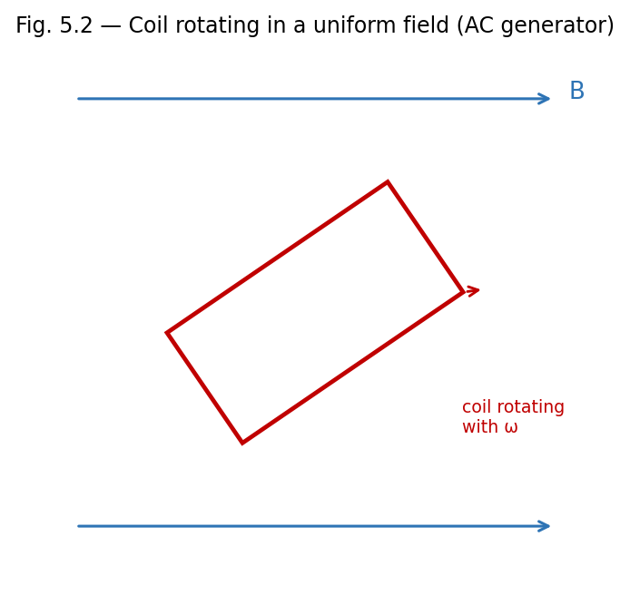
Fig. 5.2 — A coil rotating with angular velocity ω in a uniform field B generates a sinusoidal EMF (the AC generator principle).
A simple AC generator consists of a rectangular coil of N turns and area A rotating with constant angular velocity ω in a uniform magnetic field B. If θ = ωt is the angle between the normal to the coil and B at time t, the flux linkage is:
NΦB = NBA cos(ωt)
By Faraday's law, the induced EMF is:
ε = − d(NΦB)/dt = NBAω sin(ωt) = ε0 sin(ωt)
where ε0 = NBAω is the peak EMF. This sinusoidally varying EMF is the basis of AC power generation; the frequency of the generated EMF equals the rotational frequency of the coil, and the amplitude can be increased by increasing N, B, A, or ω.
Example: EMF induced in a changing field
A circular coil of 100 turns and radius 5 cm is placed with its plane perpendicular to a magnetic field that changes uniformly from 0.2 T to 0.8 T in 0.5 s. Find the average induced EMF.
Area A = π(0.05)² = 7.85×10⁻³ m². ΔΦ = ΔB×A = 0.6×7.85×10⁻³ = 4.71×10⁻³ Wb.
ε = N(ΔΦ/Δt) = 100 × (4.71×10⁻³/0.5) = 0.942 V.
Example: Energy stored in an inductor
An inductor of 2 H carries a steady current of 5 A. Find the energy stored in its magnetic field.
U = (1/2)LI² = (1/2)(2)(5)² = 25 J.
Example: Mutual EMF between two coils
Two coils have a mutual inductance of 0.5 H. If the current in the primary changes at a rate of 4 A/s, find the EMF induced in the secondary.
ε2 = −M(dI1/dt) = −0.5 × 4 = −2 V (magnitude 2 V, direction given by Lenz's law).
State Faraday's law of electromagnetic induction in both integral and differential form.
State Lenz's law and explain how it is consistent with the principle of conservation of energy.
Define self-inductance and mutual inductance, with their SI units.
Show that mutual inductance is reciprocal, i.e., M12 = M21.
Write the expression for energy stored in an inductor and explain its origin physically.
Why must the induced electric field during electromagnetic induction be non-conservative?
State and derive Faraday's law of electromagnetic induction in differential form, starting from its integral form.
Derive an expression for the self-inductance of a long solenoid.
Derive an expression for the mutual inductance between two coaxial solenoids (a long primary and a short secondary wound around its middle).
Derive the expression for the energy stored in the magnetic field of a current-carrying inductor, and show its equivalence to the field energy density B²/2μ0.
Derive an expression for the EMF induced in a coil rotating with constant angular velocity in a uniform magnetic field (AC generator).
A coil of 200 turns and area 0.02 m² rotates at 50 revolutions per second in a field of 0.1 T. Find the peak EMF generated.
The current in a coil of self-inductance 0.4 H changes from 2 A to 6 A in 0.2 s. Find the average induced EMF.
Two coils have mutual inductance 0.25 H. Find the EMF induced in one coil when the current in the other changes at 10 A/s.
Find the energy density in a magnetic field of 0.5 T in vacuum. [Ans: ≈ 9.95×10⁴ J/m³]
1. The SI unit of self-inductance is: (a) weber (b) tesla (c) henry (d) farad — Answer: (c)
2. Lenz's law is a consequence of: (a) charge conservation (b) energy conservation (c) momentum conservation (d) Gauss's law — Answer: (b)
3. The differential form of Faraday's law is: (a) ∇·E = −∂B/∂t (b) ∇×E = −∂B/∂t (c) ∇×B = μ0J (d) ∇·B = 0 — Answer: (b)
4. Energy stored in an inductor carrying current I is: (a) LI (b) LI² (c) (1/2)LI² (d) (1/2)L²I — Answer: (c)
5. In an AC generator, the induced EMF varies as: (a) cos(ωt) only (b) a constant (c) sin(ωt) (d) linearly with time — Answer: (c)
| Law / Quantity | Expression |
| Faraday's law (integral) | ε = −dΦB/dt = −N dΦB/dt (N turns) |
| Faraday's law (differential) | ∇ × E = −∂B/∂t |
| Lenz's law | Induced effects oppose the change producing them |
| Self-inductance | Φself = LI ; ε = −L dI/dt |
| Mutual inductance | Φ2 = M I1 ; M12 = M21 |
| Energy in an inductor | U = (1/2)LI² = ∫(B²/2μ0)dV |
Gradient of a scalar field V: ∇V = (∂V/∂x)x̂ + (∂V/∂y)ŷ + (∂V/∂z)ẑ — points in the direction of steepest increase of V.
Divergence of a vector field A: ∇·A = ∂Ax/∂x + ∂Ay/∂y + ∂Az/∂z — a scalar measuring the net outward 'flow' of A per unit volume at a point.
Curl of a vector field A: ∇×A — a vector measuring the local 'rotation' or circulation of A per unit area at a point.
Divergence theorem (Gauss–Ostrogradsky theorem): ∮S A·dA = ∫∫∫V (∇·A) dV — relates the flux of A through a closed surface S to the volume integral of ∇·A over the enclosed volume V. Used to pass between the integral and differential forms of Gauss's law (electric and magnetic).
Stokes' theorem: ∮C A·dl = ∫∫S (∇×A)·dA — relates the circulation of A around a closed loop C to the flux of ∇×A through any surface S bounded by C. Used to pass between the integral and differential forms of Ampere's law and Faraday's law.
∇×(∇V) = 0 for any scalar V — this is why a conservative field (∇×E = 0) can always be written as E = −∇V.
∇·(∇×A) = 0 for any vector A — consistent with ∇·B = 0 following automatically whenever B is written as the curl of a vector potential (a result explored in more advanced courses).
1. State Gauss's law and explain the significance of the Gaussian surface.
2. Distinguish between electric field and electric potential.
3. State the Biot–Savart law and mention two of its applications.
4. Define magnetic susceptibility and relative permeability.
5. State Faraday's and Lenz's laws of electromagnetic induction.
6. Define self- and mutual inductance with their SI units.
1. Derive the electric field due to an infinite plane sheet of charge using Gauss's law.
2. Derive the relation E = −∇V and explain the concept of equipotential surfaces.
3. Using Ampere's circuital law, derive the magnetic field inside a long solenoid.
4. Explain the B–H hysteresis loop, defining retentivity and coercivity.
5. Derive the expression for the self-inductance of a long solenoid.
6. Explain the domain theory of ferromagnetism.
1. State and prove Gauss's law of electrostatics, and use it to derive the electric field inside and outside a uniformly charged solid sphere.
2. Derive the magnetic field on the axis of a circular current loop and at the centre of a toroid, using the Biot–Savart law and Ampere's law respectively.
3. Derive Faraday's law of electromagnetic induction in differential form, and use it to obtain the EMF induced in a coil rotating in a uniform magnetic field.
Edward M. Purcell, Electricity and Magnetism (McGraw-Hill Education, 1986).
David J. Griffiths, Introduction to Electrodynamics, 3rd Edn. (Benjamin Cummings, 1998).
Arthur F. Kip, Fundamentals of Electricity and Magnetism (McGraw-Hill, 1968).
J. H. Fewkes & John Yarwood, Electricity and Magnetism, Vol. I (Oxford University Press, 1991).
D. C. Tayal, Electricity and Magnetism (Himalaya Publishing House, 1988).